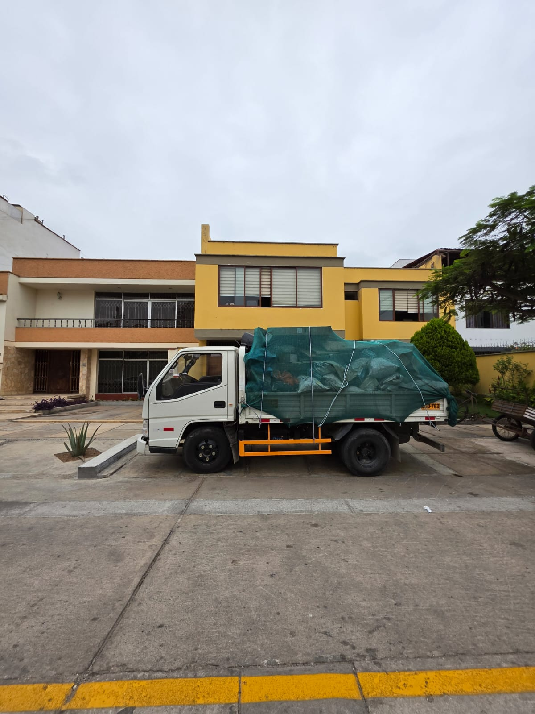

Desmonte embolsado
Recojo de bolsas con concreto, ladrillo, tierra, cerámica y residuos de construcción.
Transporte Luchito
Atención 24/7

Servicio en el distrito de San Luis
Realizamos el recojo, carga, transporte y eliminación de desmonte embolsado o suelto en viviendas, edificios, talleres, oficinas, negocios y remodelaciones del distrito de San Luis.
Servicio local
Ofrecemos el servicio de eliminación de desmonte en San Luis para viviendas, departamentos, edificios, oficinas, comercios, talleres y obras pequeñas.
Coordinamos el retiro de desmonte en San Luis considerando la cantidad, el tipo de material, el piso, la facilidad de acceso y la distancia entre el punto de carga y el camión.
Retiramos escombros, residuos de construcción, concreto, ladrillo, tierra, cerámica, mayólica, drywall, madera y otros restos generados durante una demolición o remodelación.
Consultar disponibilidad en San Luis
¿Qué retiramos?
Evaluamos cada trabajo mediante fotografías para organizar la carga y seleccionar una unidad acorde con el volumen aproximado.
Recojo de bolsas con concreto, ladrillo, tierra, cerámica y residuos de construcción.
Retiro de material acumulado en patios, cocheras, interiores y zonas de obra.
Recojo de mayólica, drywall, madera, sanitarios y otros acabados retirados.
Coordinamos el servicio considerando piso, ascensor, escaleras y horarios permitidos.
Cargamos y trasladamos el desmonte utilizando una unidad adecuada para el volumen.
Retiramos el material para dejar disponible la zona donde se encontraba acumulado.
Cobertura local
Coordinamos servicios en diferentes urbanizaciones y sectores del distrito de San Luis, según la disponibilidad y las condiciones del trabajo.
Envíanos tu ubicación y una referencia para comprobar la disponibilidad del servicio.
Consultar mi zonaProceso sencillo
Toma imágenes donde se observe todo el material que necesitas retirar.
Envíanos el sector de San Luis y una referencia cercana.
Revisamos cantidad, material, piso y condiciones de acceso.
Acordamos una fecha y horario para realizar la carga y el traslado.
Precio del servicio
El precio depende de las condiciones reales del servicio. La cantidad de bolsas no es el único factor que se toma en cuenta.
Preguntas frecuentes
Información útil antes de coordinar el servicio.
Depende del volumen, material, piso, acceso y distancia hasta el camión. Envía fotografías para una evaluación.
Sí. Evaluamos bolsas de desmonte, material suelto, escombros y residuos de remodelación.
Sí. Coordinamos servicios para viviendas, negocios, oficinas, talleres y obras pequeñas.
La atención se evalúa según la ubicación, cantidad de material, horario y condiciones de acceso para la unidad.
Sí. Envía fotografías claras, ubicación, cantidad aproximada y facilidad de acceso.
Información relacionada
Otros distritos
Atención en San Luis